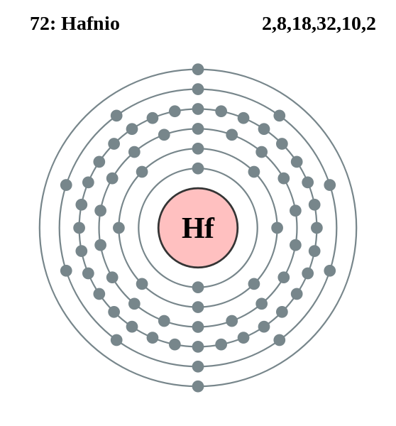

|
|
||
|
HAFNIO El hafnio se descubrió en 1923 y se ha utilizado desde entonces para aleaciones con hierro, titanio, niobio, tantalio y otros metales. El hafnio es un metal dúctil con un lustre plateado brillante y es muy difícil de separar. Es resistente a alcalinos concentrados y reacciona a temperaturas elevadas con oxígeno, nitrógeno, carbono, boro, azufre y silicio, y directamente con halógenos para formar tetrahaluros. Como el hafnio tiene una buena sección transversal de absorción para neutrones térmicos, propiedades mecánicas excelentes y resistencia a la corrosión, se usa para las barras de control de reactores nucleares. Asimismo, se usa en lámparas incandescentes y llenas con gas. |
 |
DATOS Número Atómico: 72 Peso Atómico: 178.5 Electronegatividad: 1,3 Configuración Electrónica: [Xe]4f145d26s2 Estados de Oxidación: +4 No. de Electrones de Valencia: 4 |